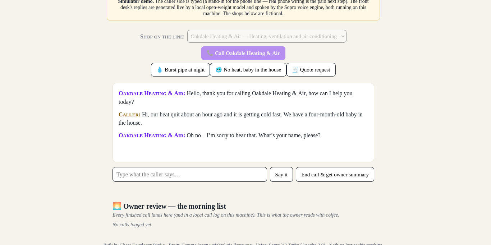
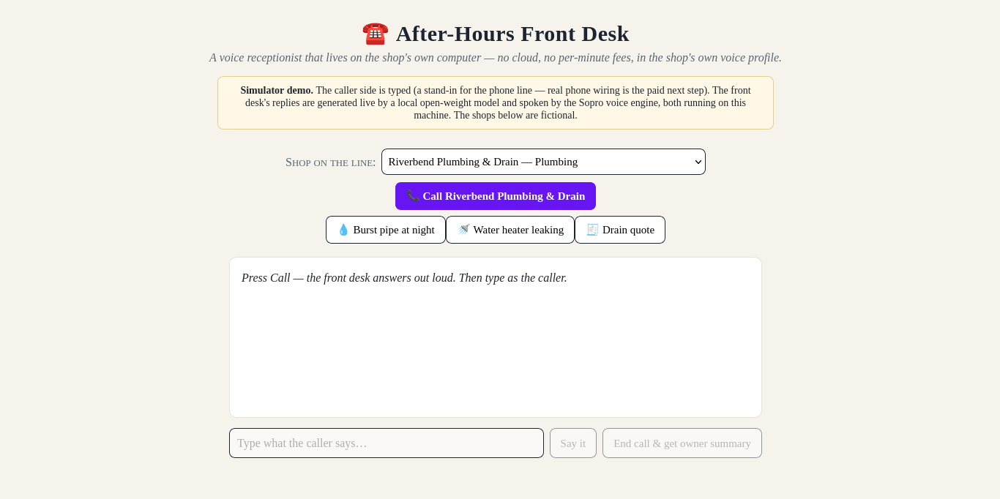
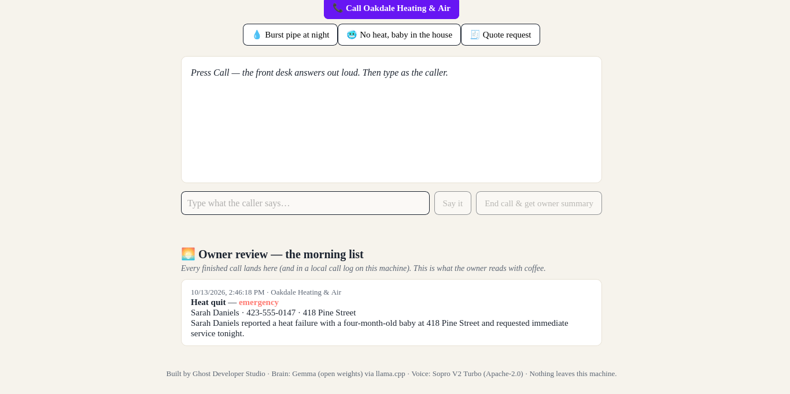

The demo video
Recorded live in the call simulator: frames are the actual page during the call, and the audio is the exact speech the desk generated for those replies. Nothing is a mock-up.
Screenshots from real runs



What a finished call produces
Real output from a real demo run (the call in the video):
📩 Owner summary — texted to the shop owner
| Caller | Sarah Daniels |
| Phone | 423-555-0147 |
| Job | Heat quit |
| Urgency | emergency |
| Address | 418 Pine Street in Oakdale |
| Wants | tonight, as soon as possible |
| Summary | Sarah Daniels reported a heat failure with a four-month-old baby at 418 Pine Street and requested immediate service. |
The evaluation: 20 scripted calls the desk had never seen
After the build, the finished desk was run against 20 scripted caller scenarios through its real API — emergencies, urgent jobs, and routine work across both demo shops, each judged by that shop's own written definition of emergency, plus edge cases (a vague caller, a prank call, a caller who refuses details, a caller outside the service area). The desk was not tuned against these scenarios first. Full write-up, per-scenario table, and both failures in detail: eval/RESULTS.md.
| Measure | Result |
|---|---|
| Urgency (triage) correct | 19 / 20 (95%) |
| Emergencies correctly flagged | 8 / 8 |
| Urgent correctly judged | 4 / 5 (one over-triage) |
| Routine correctly judged | 7 / 7 |
| Extraction fields correct (name, phone, address, job) | 79 / 80 |
| Scenarios fully correct | 18 / 20 |
| Details invented that the caller never gave | 0 |
The two failures, named on purpose: a contained garage leak was flagged emergency where the shop's own card says urgent (it fails toward sending help faster; the candidate fix is documented but was deliberately not applied after seeing the test, so the 19/20 stays honest), and on the prank call the extractor filed the job as “Refrigerator.”
Latency, labeled plainly: on the 2-core sandbox this was built on, a desk turn end to end took a median of about 24 seconds and the summary card about 54 seconds after hang-up. Sandbox numbers, not a production promise.
The math
Measured on the build machine: a full call (greeting, three turns, summary extraction) is roughly 4,500 tokens, nearly all of it the shop-card system prompt, which llama.cpp serves from its prefix cache after the first turn. The API bill is $0 — there is no API. The only meter is electricity: about a twentieth of a cent per call. That is what makes a flat $49/month honest, against roughly $30–$100/month for cloud AI receptionists and $200–$500+/month for human answering services.
Run the full simulator yourself
The complete demo — both shops, live model conversation, spoken replies, summary cards, morning list — runs from the repo: github.com/littlestjames82-sys/after-hours-front-desk (MIT). You will need Python 3.10+, a llama.cpp build, the Gemma 3 4B-it GGUF, and a Sopro install; the README's Run section is a worked example.